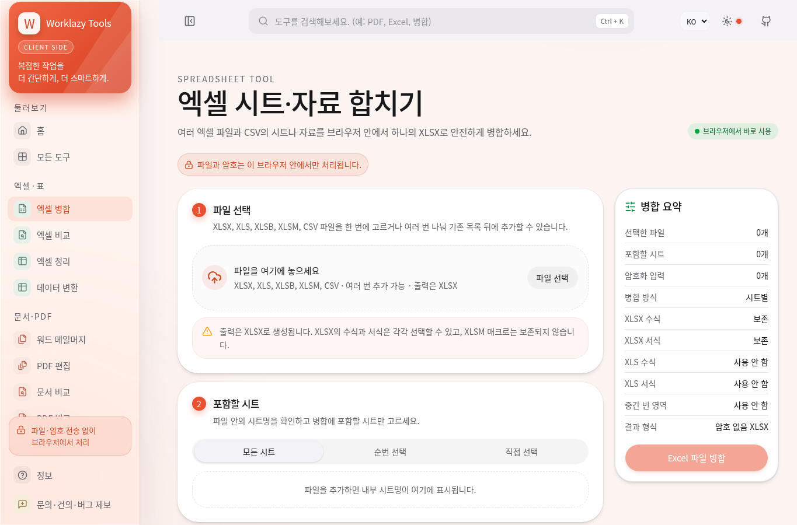
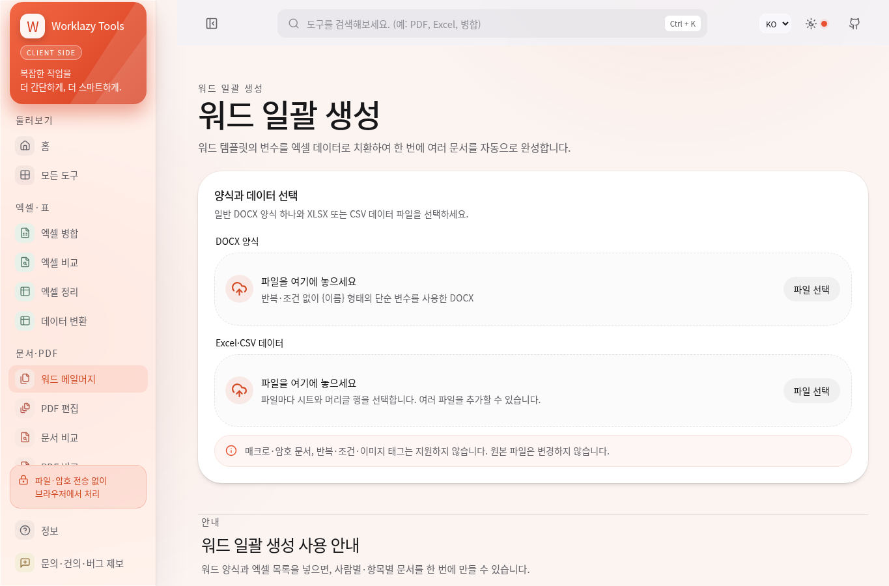
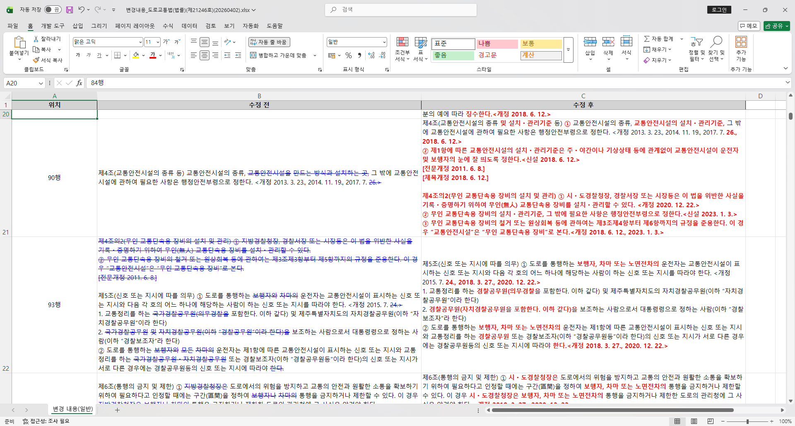

계약서 수정본 비교
문서 두 개를 비교해 변경 내용을 표시합니다. Word 변경 추적 문서와 엑셀 비교 보고서를 만듭니다. 실제 계약 검토에 사용했습니다.
Python · PySide6 · Word COM
Windows와 Microsoft Word 필요.
PROJECT 01 / 문서 · 엑셀 자동화
여러 파일을 합치고, 수정 내용을 비교하고, 양식 문서를 일괄 생성합니다.
업무에 맞춰 설치형 프로그램과 브라우저 도구로 구현했습니다.

여러 파일과 시트를 조건에 맞춰 합칩니다.
↗02기준 열과 조건으로 차이를 확인합니다.
↗03Word·한글 문서의 변경 내용을 봅니다.
↗04워드 양식에 목록 데이터를 채웁니다.
↗PDF 편집·변환 등 파일 도구도 함께 제공합니다.
파일을 선택하고 조건을 정한 뒤 결과를 저장합니다.


프로그램 설치와 실행 환경이 필요했던 업무를 브라우저에서도 처리하도록 구성했습니다.
Word Compare · ExcelMerger
PC 환경과 설치된 프로그램에 맞춰 실행
Worklazy Tools
웹페이지에서 파일 선택·처리·저장
같은 업무를 더 쉽게 쓰도록 바꿨습니다. 문서·엑셀 처리는 브라우저에서 실행합니다. 별도 파일 처리 서버 없이 정적 웹페이지로 배포합니다.
브라우저 실행 환경에 맞춰 처리 방식과 화면을 다시 구성했습니다. 무거운 작업은 Web Worker로 분리하고, 문서 형식에 맞는 라이브러리와 WASM 엔진을 연결했습니다.
| 설치형 도구 | 웹에서 제공하는 기능 | 관련 기술 |
|---|---|---|
| Word Compare | Word·한글 문서 비교 | Python·Word COM → 브라우저 문서 처리 |
| ExcelMerger | 엑셀 병합·비교 | Python·PySide6 → TypeScript·Web Worker |
React·TypeScript를 사용했습니다. 문서 형식별 라이브러리와 WASM 엔진을 연결했습니다.
문서 두 개를 비교해 변경 내용을 표시합니다. Word 변경 추적 문서와 엑셀 비교 보고서를 만듭니다. 실제 계약 검토에 사용했습니다.
Python · PySide6 · Word COM
Windows와 Microsoft Word 필요.
반복해서 열고 붙이던 파일을 한 번에 합칩니다. 실행 환경에 맞는 처리 엔진을 선택하도록 구성했습니다.
Python · PySide6
Excel·LibreOffice 등 설치 환경에 따라 처리 방식 선택.
